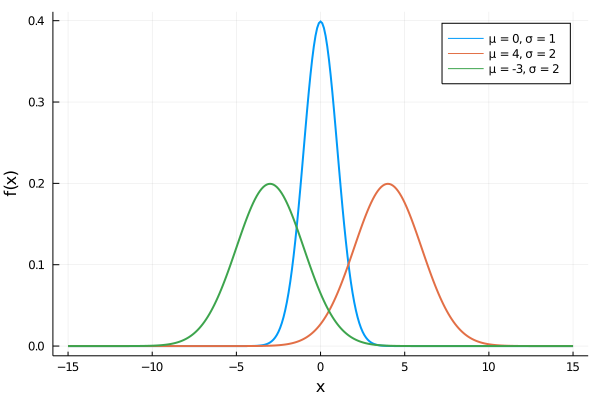

Functions
In Julia, a function is an object that maps a tuple of argument values to a return value. There are multiple ways to create a function, and each of them is useful in different situations. The first way is to use function ... end syntax
function plus(x,y)
x + y
endIn the previous example, we created a plus function that accepts two arguments, x, y, and returns their sum.
julia> plus(2, 3)
5
julia> plus(2, -3)
-1By default, functions in Julia returns the last evaluated expression, which in our example is x + y. However, in many situations, it is useful to return something other than the last expression. For such a case, there is the return keyword. The previous example can be equivalently rewritten as follows
function plus(x,y)
return x + y
endEven though both function definitions do exactly the same, it is always good to use the return keyword. Using the return keyword usually improves the readability of the code and can prevent potential confusion.
function plus(x, y)
return x + y
println("I am a useless line of code!!")
endIn the example above, there is the println function on the last line. However, if the function is called, nothing is printed into the REPL. The reason is that the expressions after the return keyword are never evaluated
julia> plus(4, 5)
9
julia> plus(3, -5)
-2It is also possible to return multiple values at once. It can be done by writing multiple comma-separated values after the return keyword (or on the last line when return is omitted)
function powers(x)
return x, x^2, x^3, x^4
endThis syntax creates a tuple of values, and then this tuple is returned as a function output. It can be seen, if we call the powers function that returns the first four powers of the given variable x
julia> ps = powers(2)
(2, 4, 8, 16)
julia> typeof(ps)
NTuple{4,Int64}Since the function returns a tuple, returned values can be directly unpacked into multiple variables. It can be done in the same way as unpacking tuples
julia> x1, x2, x3, x4 = powers(2)
(2, 4, 8, 16)
julia> x3
8Write a function that for a given real number $x$ and integer $p$ computes $x^p$ without using the ^ operator. Use only basic arithmetic operators +, -, *, / and if condition.
Hint: use recursion.
Solution:
To use recursion, we have to split the computation into three parts:
p = 0: the function should return1.p > 0: the function should be called recursively with argumentsx,p - 1and the result should be multiplied byx.p < 0: then it is equivalent to call the power function with arguments1/x,- p.
These three cases can be defined simply one if condition as follows
function power(x::Real, p::Integer)
if p == 0
return 1
elseif p > 0
return x * power(x, p - 1)
else
return power(1/x, - p)
end
endNote that we use type annotation for function arguments. Using type annotation, we can assure that the input arguments are always of the proper type. In the example above, the first argument must be a real number, and the second argument must be an integer
julia> power(2, 5)
32
julia> power(2, -2)
0.25
julia> power(2, 5) == 2^5
true
julia> power(5, -3) == 5^(-3)
trueIf we call the function with arguments of inappropriate types, an error will occur
julia> power(2, 2.5)
ERROR: MethodError: no method matching power(::Int64, ::Float64)
[...]We will discuss the type annotation later in the section about methods.
One-line functions
Besides the traditional function declaration syntax above, it is possible to define a function in a compact one-line form
plus(x, y) = x + ythat is equivalent to the previous definition of the plus function
julia> plus(4, 5)
9
julia> plus(3, -5)
-2This syntax is very similar to the mathematical notation, especially in combination with the Greek alphabet. For example, the following function
\[f(\varphi) = - 4 \cdot \sin\left(\varphi - \frac{\pi}{12}\right)\]
can be in Julia defined in almost identical form
f(φ) = -4sin(φ - π/12)Even with one-line syntax, it is possible to create more complex functions with some intermediate calculations. It can be done, using brackets and semicolons to separate expressions. The last expression in brackets is then returned as a function output
g(x) = (x -= 1; x *= 2; x)In this example, the g function subtracts 1 from the given x and then multiply it by 2 and returns the result
julia> g(3)
4However, for better code readability, the traditional multiline syntax should be used for more complex functions.
Write a one-line function that returns true if the input argument is an even number and false otherwise.
Hint: use modulo function and ternary operator ?.
Solution:
From the section about the ternary operator, we know the syntax
a ? b : cThis expression can be read as follows: if a is true, evaluate b otherwise evaluate c. We also know that even numbers are divisible by 2, and we can check it using the modulo, i.e., the given integer x is even if mod(x, 2) == 0. Altogether, we get the following function definition
even(x::Integer) = mod(x, 2) == 0 ? true : falseNote that we use type annotation to assure that the argument is always an integer.
julia> even(11)
false
julia> even(14)
trueOptional arguments
In many cases, it is advantageous to set predefined values to some function arguments. Arguments with a default value are typically called optional arguments. Like in Python, optional arguments can be created by assigning a default value to the normal argument. The following function has only one argument, which is optional with a default value world
hello(x = "world") = println("Hello $(x).")Since the only argument is optional, we can call the function without any argument. In such a case, the function prints "Hello $(x).", where the default value replaces x. Or we can call the function with one argument and change the printed sentence
julia> hello()
Hello world.
julia> hello("people")
Hello people.In the same way, it is possible to define multiple optional arguments. It is even possible to define optional arguments that depend on other arguments. However, there are some rules. Arguments must be sorted as follows: firstly, we have to define all mandatory arguments, and then we can define optional arguments
powers(x, y = x*x, z = y*x, v = z*x) = x, y, z, vThis function has one mandatory argument and three optional ones. If only the first argument s is provided, then the function returns the first four powers of the given x
julia> powers(2)
(2, 4, 8, 16)Otherwise, the function output depends on the given input arguments. For example, if two arguments x and y are provided, the function returns these two arguments unchanged, their product x*y and also x^2*y
julia> powers(2, 3)
(2, 3, 6, 12)Note that optional arguments can depend only on the arguments defined before; otherwise, an error will occur.
f(x = 1, y = x) = (x, y)
g(x = y, y = 1) = (x, y)The definition of the f function is correct and the definition of the g function is incorrect, since the variable y is not defined when we define x
julia> f()
(1, 1)
julia> g()
ERROR: UndefVarError: y not defined
[...]Write a function, that computes the value of the following quadratic form
\[q_{a,b,c}(x) = ax^2 + bxy + cy^2\]
where $a, b, c, x \in \mathbb{R}$. Use optional arguments to set default values for parameters
\[a = 1, \quad b = 2a, \quad c = 3(a + b).\]
What is the function value at point $(4, 2)$ for default parameters? What is the function value at the same point if we use $c = 3$?
Solution:
The quadratic form can be implemented as follows
q(x, y, a = 1, b = 2*a, c = 3*(a + b)) = a*x^2 + b*x*y + c*y^2Since we want to evaluate the function q at point (4, 2) with default parameters, we can simply use only the first two arguments
julia> q(4, 2)
68In the second case, we want to evaluate the function at the same point with $c = 3$. However, it is not possible to set only the last optional argument. We have to set all previous optional arguments too. For the first two optional arguments, we use the default values, i.e., a = 1 and b = 2*a = 2
julia> q(4, 2, 1, 2, 3)
44Keyword arguments
The previous exercise shows the most significant disadvantage of using optional arguments, i.e., it is not possible to change only one optional argument unless it is the first one. Luckily there are also keyword arguments that can be used instead of optional arguments. The syntax is the same as for optional arguments, with one exception: we have to use a semicolon before the first keyword argument.
linear(x; a = 1, b = 0) = a*x + bThis function is a simple linear function, where a represents slope, and b represents intercept. As with functions with optional arguments, we can call the function with the mandatory arguments only
julia> linear(2)
2or we can change the value of any keyword argument by assigning a new value to its name
julia> linear(2; a = 2)
4
julia> linear(2; b = 4)
6
julia> linear(2; a = 2, b = 4)
8Note that the semicolon, in this case, is not mandatory and can be omitted. Also, the order of keyword arguments can be arbitrary. It is even possible to mix keyword arguments with positional arguments as can be seen in the following example
julia> linear(b = 4, 2, a = 2)
8However, it's a good practice to always separate keyword arguments from optional arguments with a semicolon.
Julia also provides one very nice feature that can be used to pass keyword arguments. Imagine that we have two variables, a and b, and we want to pass them as keyword arguments to the linear function defined above. The standard way is as follows
julia> a, b = 2, 4
(2, 4)
julia> linear(2; a = a, b = b)
8However, in Julia, we can use the shorter version, that can be used if the variable name is the same as the name of the keyword argument we want to set. In such a case, the following is equivalent to the previous example
julia> linear(2; a, b)
8Write a probability density function for the Gaussian distribution, that is given by the following formula
\[f_{\mu, \sigma}(x) = \frac{1}{\sigma \sqrt{ 2\pi }} \exp\left\{ -\frac{1}{2} \left( \frac{x - \mu}{\sigma} \right) ^2 \right\},\]
where $\mu \in \mathbb{R}$ and $\sigma^2 > 0$. Use keyword arguments to set the following default values $\mu = 0$ and $\sigma = 1$.
Bonus: check that this function is a probability density function, i.e., that the sum over all possible values is equal to 1.
Hint: use the error function to check if the variance is positive.
Solution:
The probability density function for the Gaussian distribution can be simply written as follows
function gauss(x::Real; μ::Real = 0, σ::Real = 1)
σ^2 > 0 || error("the variance `σ^2` must be positive")
return exp(-1/2 * ((x - μ)/σ)^2)/(σ * sqrt(2*π))
endNote that we use type annotation to assure that all input arguments are real numbers. We also check whether the given standard deviation $\sigma$ does not lead to a zero variance (the first line in the function body)
julia> gauss(0)
0.3989422804014327
julia> gauss(0.1; μ = 1, σ = 1)
0.2660852498987548The integral of the probability density function over all real numbers should be equal to one. We can check it numerically as follows
julia> step = 0.01
0.01
julia> x = -100:step:100;
julia> sum(gauss, x) * step
1.0000000000000002
julia> g(x) = gauss(x; μ = -1, σ = 1.4)
g (generic function with 1 method)
julia> sum(g, x) * step
1.0000000000000007We use the sum function, which can accept a function as the first argument and apply it to each value before summation. The result is always multiplied by 0.01. It is because we use a range with stepsize 0.01 to approximate continuous interval [-100, 100].
We can also visualize the probability density functions using Plots.jl package
using Plots
x = -15:0.1:15
plot(x, gauss.(x); label = "μ = 0, σ = 1", linewidth = 2, xlabel = "x", ylabel = "f(x)");
plot!(x, gauss.(x; μ = 4, σ = 2); label = "μ = 4, σ = 2", linewidth = 2);
plot!(x, gauss.(x; μ = -3, σ = 2); label = "μ = -3, σ = 2", linewidth = 2);
Variable number of arguments
Sometimes, it is very convenient to define a function that can accept any number of arguments. Such functions are traditionally known as varargs functions (short for variable number of arguments). In Julia, varargs functions can be defined using triple-dot syntax after the last positional argument as follows
nargs(x...) = println("Number of arguments: ", length(x))Note that the triple-dot ... is also known as the splat operator. The nargs function defined above prints the number of given input arguments
julia> nargs()
Number of arguments: 0
julia> nargs(1, 2, "a", :b, [1,2,3])
Number of arguments: 5Note that we use input arguments of different types.
The splat operator can also be used to pass multiple arguments to the function at once. Imagine the situation, that we have a tuple of values and we want to use these values as arguments to some function. We can do it manually as follows
julia> args = (1, 2, 3)
(1, 2, 3)
julia> nargs(args[1], args[2], args[3])
Number of arguments: 3However, in Julia, it is possible to use the splat operator to unpack the tuple of arguments directly to the function
julia> nargs(args...)
Number of arguments: 3Note the difference if we omit the splat operator
julia> nargs(args)
Number of arguments: 1In such a case, the function receives only one argument instead of three arguments. The same syntax can be used for any iterable object, such as ranges or arrays
julia> nargs(1:100)
Number of arguments: 1
julia> nargs(1:100...)
Number of arguments: 100
julia> nargs([1,2,3,4,5])
Number of arguments: 1
julia> nargs([1,2,3,4,5]...)
Number of arguments: 5It is also possible to use the same syntax to define a function with an arbitrary number of keyword arguments. Functions that accept any number of keyword arguments can be beneficial. Consider the following situation: we want to define a function that computes the modulo of the given numbers and then rounds the result. To define such a function, we can use the combination of the mod and round functions. However, the round function has many keyword arguments, and we want to have an option to use them all. In such a case, we can use the following syntax to define the roundmod function
roundmod(x, y; kwargs...) = round(mod(x, y); kwargs...)With this simple syntax, we are able to pass all keyword arguments to the round function without the necessity to define them all in the roundmod function
julia> roundmod(12.529, 5)
3.0
julia> roundmod(12.529, 5; digits = 2)
2.53
julia> roundmod(12.529, 5; sigdigits = 2)
2.5Write a function wrapper, that accepts a number and applies the round, ceil or floor function based on the keyword argument type. Make sure that all optional and keyword arguments can be passed to these three functions.
Use the function to solve the following tasks
- Round
1252.1518to the nearest larger integer and convert the resulting value toInt64. - Round
1252.1518to the nearest smaller integer and convert the resulting value toInt16. - Round
1252.1518to2digits after the decimal point. - Round
1252.1518to3significant digits.
Solution:
The one way how to define such a function is to use if-elseif-else statement as follows
function wrapper(x...; type = :round, kwargs...)
if type == :ceil
return ceil(x...; kwargs...)
elseif type == :floor
return floor(x...; kwargs...)
else
return round(x...; kwargs...)
end
endIn this case, the type keyword argument is used to determine which function should be used. Note that we use an optional number of arguments as well as an optional number of keyword arguments
julia> x = 1252.1518
1252.1518
julia> wrapper(Int64, x; type = :ceil)
1253
julia> wrapper(Int16, x; type = :floor)
1252
julia> wrapper(x; digits = 2)
1252.15
julia> wrapper(x; sigdigits = 3)
1250.0The second way to solve this exercise is to use the fact that it is possible to pass functions as arguments. Using this fact, we can omit the if conditions, and we can pass the appropriate function directly
wrapper_new(x...; type = round, kwargs...) = type(x...; kwargs...)Note that in the function definition, we use the type keyword argument as a function. It can be done since we assume that a function is assigned to the type keyword argument
julia> wrapper_new(1.123; type = ceil)
2.0If we use, for example, Symbol instead of a function, the error will occur
julia> wrapper_new(1.123; type = :ceil)
ERROR: MethodError: objects of type Symbol are not callable
[...]Finally, we can test the wrapper_new function on the same arguments as we tried the wrapper function
julia> x = 1252.1518
1252.1518
julia> wrapper_new(Int64, x; type = ceil)
1253
julia> wrapper_new(Int16, x; type = floor)
1252
julia> wrapper_new(x; digits = 2)
1252.15
julia> wrapper_new(x; sigdigits = 3)
1250.0Anonymous functions
It is also common to use anonymous functions, i.e., functions without a specified name. Anonymous functions can be defined in almost the same way as a normal function
h1 = function (x)
x^2 + 2x - 1
end
h2 = x -> x^2 + 2x - 1Those two function declarations create functions with automatically generated names. Then variables h1 and h2 only refer to these functions. The primary use for anonymous functions is passing them to functions that take other functions as arguments. A classic example is the map function, which applies a function to each value of the given iterable object and returns a new array containing the resulting values
julia> map(x -> x^2 + 2x - 1, [1,3,-1])
3-element Array{Int64,1}:
2
14
-2Julia also provides a reserved word do, that also allows creating anonymous functions. In the following example, we apply the map function to two arrays. Using do block, we create an anonymous function that prints the given values a return their sum
julia> map([1,3,-1], [2,4,-2]) do x, y
println("x = $(x), y = $(y)")
return x + y
end
x = 1, y = 2
x = 3, y = 4
x = -1, y = -2
3-element Array{Int64,1}:
3
7
-3Note that the body of such a function is written in the same way as a normal function. The arguments are defined after the do keyword. However, it is usually better to create an actual function
function f(x, y)
println("x = $(x), y = $(y)")
return x + y
endand then use it in the map function
julia> map(f, [1,3,-1], [2,4,-2])
x = 1, y = 2
x = 3, y = 4
x = -1, y = -2
3-element Array{Int64,1}:
3
7
-3There are many possible uses quite different from the map function, such as managing system state. For example, there is a version of the open function that runs code ensuring that the opened file is eventually closed
open("outfile", "w") do io
write(io, data)
endDot Syntax for Vectorizing Functions
In technical-computing languages, it is common to have vectorized versions of functions. Consider that we have a function f(x). Its vectorized version is a function that applies function f to each element of an array A and returns a new array f(A). Such functions are beneficial in languages, where loops are slow and vectorized versions of functions are written in a low-level language (C, Fortran,...) and are much faster. As an example, we can mention Matlab.
In Julia, vectorized functions are not required for performance, and indeed it is often beneficial to write loops, but they can still be convenient. As an example, consider the sine function and imagine that we want to compute its value for all following values [0, π/2, 3π/4]. Using the loops, we can do it as follows
julia> x = [0, π/2, 3π/4];
julia> A = zeros(length(x));
julia> for (i, xi) in enumerate(x)
A[i] = sin(xi)
end
julia> A
3-element Array{Float64,1}:
0.0
1.0
0.7071067811865476or using list compherension
julia> A = [sin(xi) for xi in x]
3-element Array{Float64,1}:
0.0
1.0
0.7071067811865476However, in this case, the most convenient way is to use dot syntax for vectorizing functions as follows
julia> A = sin.(x)
3-element Array{Float64,1}:
0.0
1.0
0.7071067811865476In Julia, it is possible to use this syntax for any function to apply it to each element of the given array (or any other iterable object). It is handy since it allows us to write simple functions that accept, for example, only numbers as arguments, and then we can easily apply them to whole arrays
plus(x::Real, y::Real) = x + yHere, we define a function that accepts two real numbers and returns their sum. This function will work for two numbers
julia> plus(1,3)
4
julia> plus(1.4,2.7)
4.1But, if we try to apply this function to arrays, an error will occur
julia> x = [1,2,3,4]; # column vector
julia> plus(x, x)
ERROR: MethodError: no method matching plus(::Array{Int64,1}, ::Array{Int64,1})
[...]However, we can use the dot syntax for vectorizing functions. Then the plus function will be applied to arrays x and y element-wise
julia> plus.(x, x)
4-element Array{Int64,1}:
2
4
6
8More generally, if we have a function f and we use dot syntax f.(args...), then it is equivalent to calling the broadcast function in the following way broadcast(f, args...)
julia> broadcast(plus, x, x)
4-element Array{Int64,1}:
2
4
6
8The dot syntax allows us to operate on multiple arrays (even of different shapes)
julia> y = [1 2 3 4]; # row vector
julia> plus.(x, y)
4×4 Array{Int64,2}:
2 3 4 5
3 4 5 6
4 5 6 7
5 6 7 8or a mix of arrays and scalars
julia> plus.(x, 1)
4-element Array{Int64,1}:
2
3
4
5For more information, see the section about broadcasting in the official documentation.
Function composition and piping
As in mathematics, functions in Julia can be composed. If we have two functions $f: \mathcal{X} \rightarrow \mathcal{Y}$ and $g: \mathcal{Y} \rightarrow \mathcal{Z}$, then their composition can be mathematically written as
\[(g \circ f)(x) = g(f(x)), \quad \forall x \in \mathcal{X}.\]
In Julia, we can similarly compose functions using the function composition operator ∘ (can be typed as \circ<tab>)
julia> (sqrt ∘ +)(3, 6) # equivalent to sqrt(3 + 6)
3.0It is even possible to compose multiple functions at once
julia> (sqrt ∘ abs ∘ sum)([-3, -6, -7]) # equivalent to sqrt(abs(sum([-3, -6, -7])))
4.0There is also another concept that allows the chaining of functions. That concept is sometimes called piping or using a pipe to send data to a subsequent function. The piping can be used to pass the output of one function as an input to another one. In Julia, it can be done by the pipe operator |>
julia> [-3, -6, -7] |> sum |> abs |> sqrt
4.0The pipe operator can be combined with broadcasting as follows
julia> [-4, 9, -16] .|> abs .|> sqrt
3-element Array{Float64,1}:
2.0
3.0
4.0Or as in the next example, we can use broadcasting in combination with the pipe operator to apply a different function to each element of the given vector
julia> ["a", "list", "of", "strings"] .|> [uppercase, reverse, titlecase, length]
4-element Array{Any,1}:
"A"
"tsil"
"Of"
7